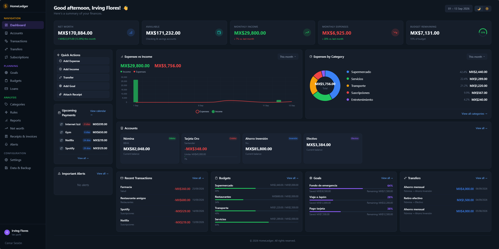
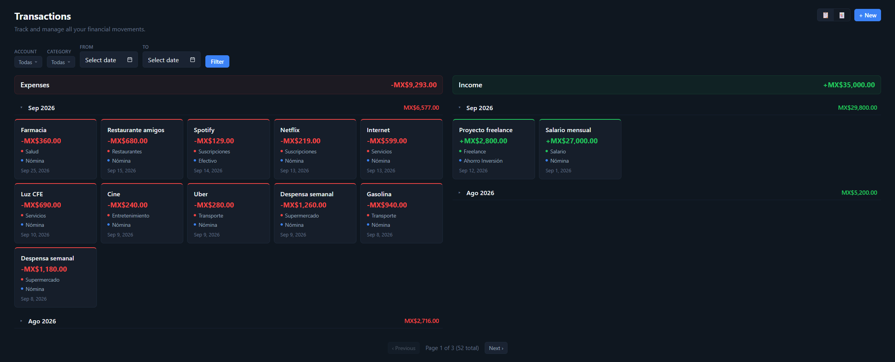
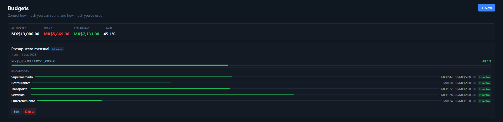

Own your finances
HomeLedger is a privacy-friendly, open-source alternative to cloud finance apps like Mint, YNAB or Monarch. It runs anywhere Docker runs — a home server, VPS, NAS, homelab or Raspberry Pi — and optionally plugs into Home Assistant as an add-on and HACS integration so your money data can power dashboards and automations. The interface is bilingual (English / Spanish) with multi-currency support.
Features
Accounts
Debit, credit, investment, cash and vouchers with dynamic balances and credit utilization.
Transactions
Income and expense tracking with month grouping, card and table views, and filtering.
Budgets
Category budgets with allocation-vs-spent progress and dashboard integration.
Savings goals
Wishlist and debt goals with fund / withdraw actions and progress tracking.
Subscriptions
Recurring payments with auto-charge and a calendar view.
Net worth
Manual assets and liabilities on top of account balances, with history.
Receipts & OCR
Upload receipts/invoices, analyze them and link them to transactions.
Bank import
CSV / XLSX / OFX / QIF / JSON with parsers for BBVA, Santander and Nu.
Home Assistant
Add-on plus HACS integration exposing finance sensors and services.
Screenshots
All screenshots use generated demo data — no real financial information is shown.



Quick start with Docker
docker run -d \
-p 3000:3000 \
-v homeledger-data:/data \
-e JWT_SECRET="your-strong-random-secret-min-32-chars" \
--name homeledger \
irving1flores/homeledger:latestApp and API are served on port 3000. See the full Docker guide and the Home Assistant setup.